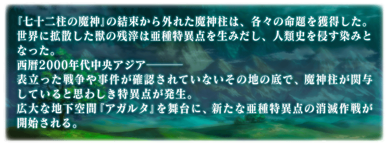
◆公開時間◆
2017年6月29日(四) 17:00～
◆亞種特異點Ⅱ開幕◆
「亞種特異點Ⅱ 傳承地底世界 雅戈泰 雅戈泰之女」的舞台為中亞地下廣闊的巨大空間。
與新登場的Servant們展開緊張刺激的戰鬥。
◆開放條件◆
通過「終局特異點」後開放。
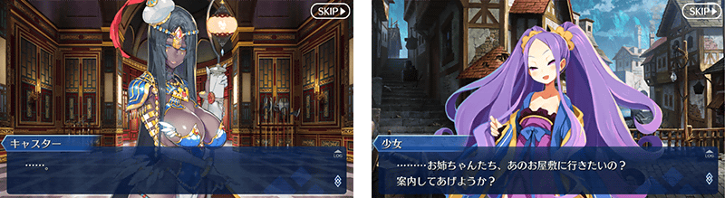
在Fate/Grand Order官方網站內首頁及Gallery，公開亞種特異點Ⅱ的TVCM。
敬請確認。
隨著亞種特異點Ⅱ故事進行來真名判明的Servant以複數登場。
真名判明前的Servant，在靈基一覧畫面和編成畫面等各種畫面中會以隱藏真名狀態顯示。
另外，一部份Servant的寶具名也同様地，直到真名判明前會是隱藏正式名稱狀態。
還有，關於召喚時的演出和戰鬥時的語音等，在真名的判明前與判明後播放會有所差異。
各自的演出和語音，真名判明後可以在圖鑑(マテリアル)和Servant詳細畫面的語音清單中確認。
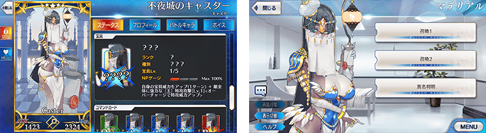
※6/29(四)修正
在亞種特異點Ⅱ的關卡中，以「女性」Servant全員與阿斯托爾福、恩奇杜、夏爾・德翁為對象，賦予在關卡中自身的絆點數獲得量提升效果。
將對象Servant編入隊伍，加深與Servant的絆吧！
※請注意關於瑪琇・基利艾拉特為絆加成的對象外。
- 對象Servant
-
職階 稀有度 Servant Saber ★★★★★ 阿爾托莉亞・潘德拉剛 ★★★★★ 阿提拉 ★★★★★ 沖田總司 ★★★★★ 尼祿・克勞狄烏斯〔Bride〕 ★★★★★ 莫德雷德 ★★★★★ 宮本武藏 ★★★★★ 兩儀式 ★★★★ 阿爾托莉亞・潘德拉剛〔Alter〕 ★★★★ 阿爾托莉亞・潘德拉剛〔Lily〕 ★★★★ 伊莉莎白・巴托里〔Brave〕 ★★★★ 夏爾・德翁 ★★★★ 鈴鹿御前 ★★★★ 尼祿・克勞狄烏斯 Archer ★★★★★ 阿爾托莉亞・潘德拉剛 ★★★★★ 伊絲塔 ★★★★ 阿塔蘭塔 ★★★★ 安妮・伯妮＆瑪莉・瑞德 ★★★★ 織田信長 ★★★★ 克洛伊・馮・愛因茲貝倫 ★★★ 尤瑞艾莉 Lancer ★★★★★ 阿爾托莉亞・潘德拉剛 ★★★★★ 斯卡哈 ★★★★★ 恩奇杜 ★★★★★ 玉藻前 ★★★★★ 布倫希爾德 ★★★★ 阿爾托莉亞・潘德拉剛〔Alter〕 ★★★★ 伊莉莎白・巴托里 ★★★★ 清姬 ★★★★ 貞德・Alter・聖誕・Lily ★★★★ 美杜莎 ★★★ 豹人 Rider ★★★★★ 魁札爾・科亞特爾 ★★★★★ 女王梅芙 ★★★★★ 弗朗西斯・德雷克 ★★★★ 阿斯托爾福 ★★★★ 阿爾托莉亞・潘德拉剛〔聖誕Alter〕 ★★★★ 安妮・伯妮＆瑪莉・瑞德 ★★★★ 瑪莉・安東尼 ★★★★ 瑪爾大 ★★★★ 莫德雷德 ★★★ 牛若丸 ★★★ 布狄卡 ★★★ 美杜莎 Caster ★★★★★ 伊莉雅絲菲爾・馮・愛因茲貝倫 ★★★★★ 玄奘三藏 ★★★★★ 玉藻前 ★★★★★ 不夜城的Caster ★★★★★ 李奧納多・達文西 ★★★★ 愛麗絲菲爾〔天之衣〕 ★★★★ 伊莉莎白・巴托里〔萬聖節〕 ★★★★ 海倫娜・布拉瓦茨基 ★★★★ 童謠 ★★★★ 尼托克里絲 ★★★★ 瑪莉・安東尼 ★★★★ 美狄亞〔Lily〕 ★★★ 美狄亞 Assassin ★★★★★ 克麗奧佩脫拉 ★★★★★ 開膛手傑克 ★★★★★ 酒呑童子 ★★★★★ 謎之女主角X ★★★★ 卡米拉 ★★★★ 斯卡哈 ★★★★ 絲西娜 ★★★★ 不夜城的Assassin ★★★★ 兩儀式 ★★★ 荊軻 ★★★ 靜謐的哈桑 ★★★ 百貌的哈桑 ★ 瑪塔・哈里 Berserker ★★★★★ 南丁格爾 ★★★★★ 源頼光 ★★★★★ 謎之女主角Ｘ〔Alter〕 ★★★★ 茨木童子 ★★★★ 黃金國的Berserker ★★★★ 玉藻貓 ★★★★ 茶茶 ★★★★ 弗蘭肯斯坦 ★★★ 清姬 Ruler ★★★★★ 貞德 ★★★★ 瑪爾大 Avenger ★★★★★ 貞德〔Alter〕 ★★★★ 戈爾貢 Alterego ★★★★★ 殺生院祈荒 ★★★★★ Meltlilith ★★★★ Passionlip MoonCancer ★★★★ BB
在亞種特異點Ⅱ會出現持有特殊HP量條的強力敵人。
這種敵人，必須減少複數次量條才能擊倒！
※透過一次的攻擊，超過HP量條的傷害不反映在下個HP量條。
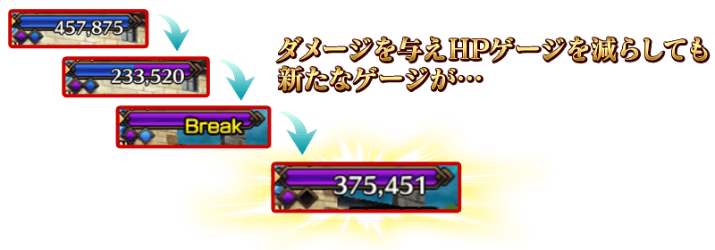
一部份Servant的戰鬥動作及寶具演出翻新！
◆對象Servant◆
・夏爾・德翁
・弗朗西斯・德雷克
・海克力斯
◆翻新時間◆
2017年6月29日(四) 17:00～
自亞種特異點Ⅱ，追加新道具1種類！
為新登場Servant的技能強化及靈基再臨必要的道具。
主要可以從亞種特異點Ⅱ主線關卡的敵人做為戰利品來獲得。
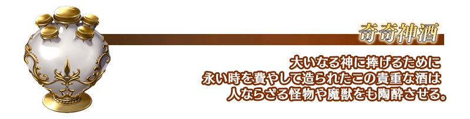
在支援編成畫面追加新職階欄位「EXTRA」。
可在「EXTRA」欄位設定的職階為「Ruler」「Avenger」「Shielder」「Alterego」「MoonCancer」合計5職階的對象。
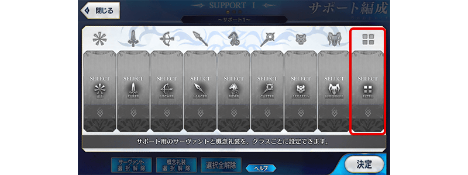
在概念禮裝強化＆進化畫面中，使用同種概念禮裝去進行限界突破的強化時，在素材側使用的概念禮裝的限界突破状況可繼承到強化對象的概念禮裝。
※另外，請注意進行強化時，根據做為素材使用的概念禮裝強化狀況，所需的必要QP會有所變化。
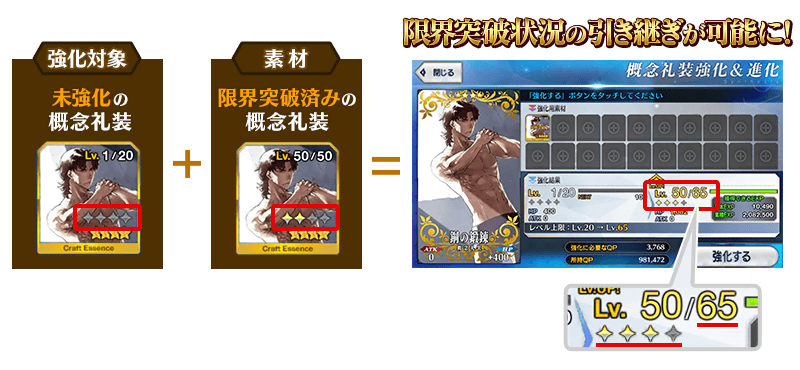
在達文西工房的「稀有稜鏡交換」，追加「英靈結晶・流星之芙芙ALL★4(HP)」與「英靈結晶・日輪之芙芙ALL★4(ATK)」。
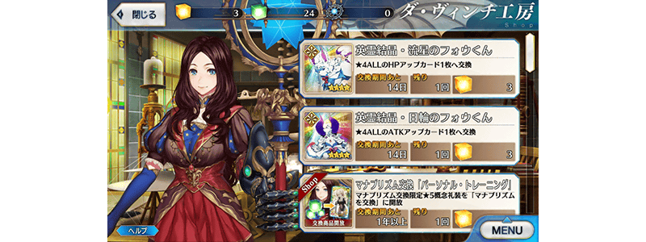
◆「雅戈泰Pick Up召喚」期間◆
期間:2017年6月29日(四) 17:00～7月12日(三) 11:59
為了紀念亞種特異點Ⅱ開幕，以期間限定舉辦「雅戈泰Pick Up召喚」！
※未到達亞種特異點Ⅱ的狀態也能進行雅戈泰Pick Up召喚。
在「亞種特異點Ⅱ 傳承地底世界 雅戈泰 雅戈泰之女」活躍的Servant「★5(SSR)不夜城的Caster」「★4(SR)不夜城的Assassin」「★4(SR)黃金國的Berserker」新登場！
另外，新概念禮裝「★3(R)幻想種」也新登場！
Pick Up期間中，新登場Servant的出現機率提升！
詳情請在聖晶石召喚畫面左下的召喚詳細確認。
※新登場Servant及新登場概念禮裝會在Pick Up期間結束後追加到故事召喚。
※關於真名尚未判明的Servant，透過主線關卡的進行會讓Servant及一部份寶具的名稱變化。
10次召喚中確定1張★4(SR)以上和確定1位★3(R)以上的Servant！
※確定★4(SR)以上包含Servant和概念禮裝。
※所謂「出現機率提升」意指比同稀有度的Servant出現機率更高的設定。
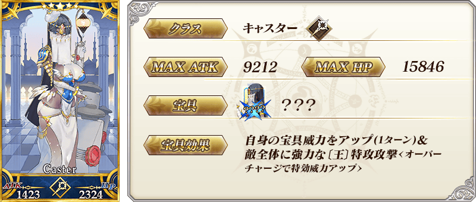
※6/29(四)修正

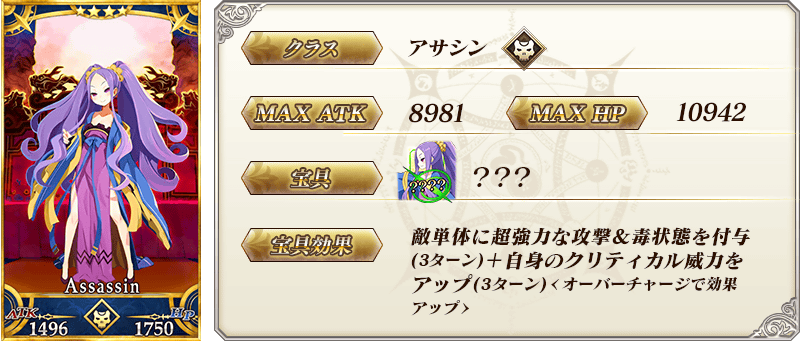
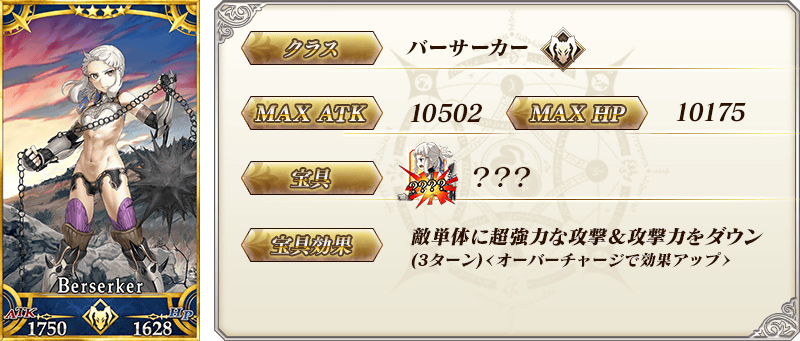
 |
★★★R |
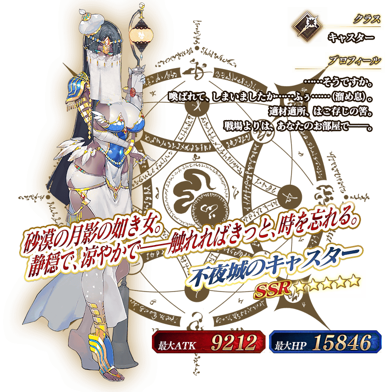
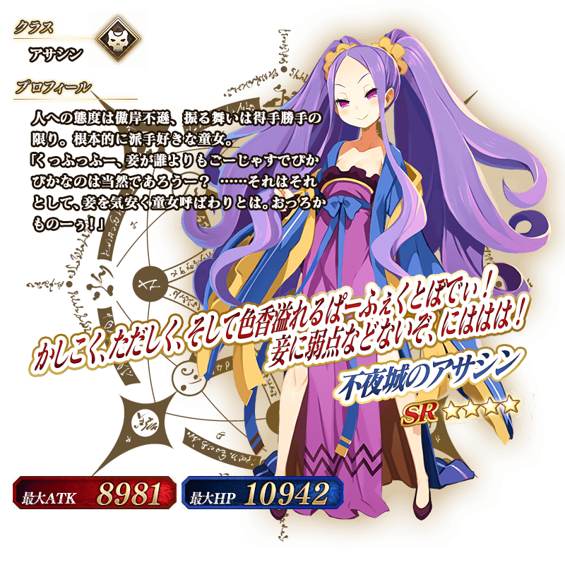
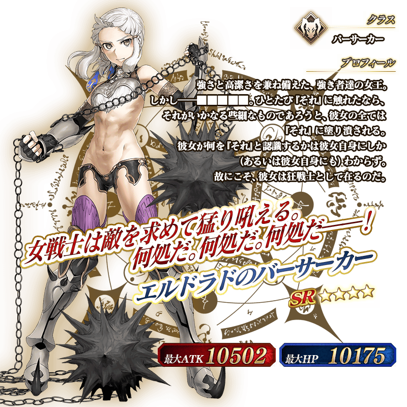